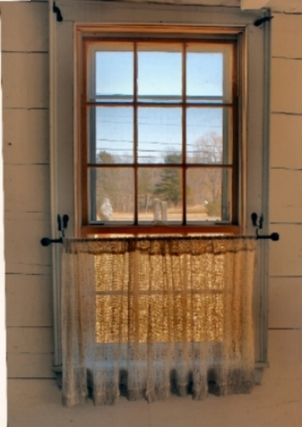
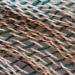

Block 1
Natural Window Treatments
Open Weave Curtains and swags are hand dyed for a natural look.
Block 2

Open Weave Knotweed
I stain the cotton threads with bown
walnut and dye the wool yarn with
knotweed plants I gather locally
Large: Shown above draped over a birch log with brackets hand forged by Scottish Wrought Iron.
measure 24 x 94 inches
$95.
Quantity
Small: Shown on the left with cafe
curtains.
measures 24 x inches $
Quantity
Block 3

Open Weave Knotweed
Shown casually draped over a tension rod.
Open weave cotton and wool
measures 24 by 94 inches $95.
Quantity
Block 4

Knotweed Panel with Rod Pocket
Displayed on the left of photo.
has a 2 inch rod pocket.
measures 24 by 72 inches $120.
Quantity
Cotton and Linen Curtain Panel
Displayed on right of photo
Detail shows texture of linen slubs in the weave.
Two inch rod pocket for carefree hanging.
measures 24 by 84 inches. $240.

Quantity
Block 5

Decorative Touches
Open Weave Knotweed Table Runner
Cotton hand dyed using local walnut husks
and knotweed. Each one unique as color
naturally varies.
measures 24 by 94 inches $95.
Block 6

Country Folk Art Pillow
America loves jeans! Made totally from recycled
100% cotton jeans and hand woven into
a red, white and blue flag motif.
Pillow filling 1% down and 90% duck feathers
measures 12 by 20 inhes $110
Quantity